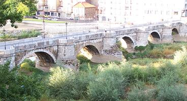
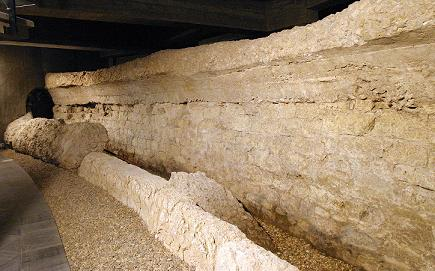

|
LEÓN-LEGIO
|
|||||||||||||||||||
|
 La ciudad de León nació hacia 29 a.e.c. como campamento militar romano de la Legio VI Victrix, en la terraza fluvial entre los ríos Bernesga y Torío. A finales del siglo I, a partir del 74, el campamento es ocupado por la Legio VII Gemina, que permanecerá en León hasta aproximadamente principios del siglo V. La única legión asentada en Hispania hasta la caída del Imperio Romano de Occidente. El recinto ocupado tiene forma rectangular 570 x 350 m. y su recinto fue amurallado en dos momentos diferentes. Conocemos la construcción de cuatro murallas distintas superpuestas. Las dos primeras construidas por la Legio VI Victrix, la tercera y la cuarta muralla fueron construidas por la Legio VII Gemina. La cuarta muralla la más conocida, de época tardoimperial, la denominada Muralla de los Cubos, que estaba pintada de rojo. En el Centro de Interpretación del León Romano, podemos apreciar un tramo de los dos recintos defensivos erigidos por la legio VII gemina para su campamento. En primer plano se puede observar el trazado de la muralla altoimperial, muy arrasada, construida por la legión a finales del siglo I. La segunda fortificación, que envuelve a la anterior por su cara externa, es la muralla de los Cubos actualmente visible en casi todo su recorrido por la ciudad antigua. Debió de levantarse a finales del siglo III o comienzos del IV. También podemos ver, a través de una ventana arqueológica, los restos de los campamentos de ambas legiones.
La porta principalis dextra estaría situada donde actualmente se ubica el Palacio de los Guzmanes. Las dos puertas estarían unidas por medio de la via principalis, en cuyo borde septentrional en la intersección con la vía praetotia se situarían las construcciones más importantes del campamento: el cuartel general, principia y la residencia del comandante de la legión, el praetorium. La segunda fortificación se conoce tradicionalmente como la "muralla de los cubos", es actualmente visible en una buena parte de su trazado. Esta muralla se data a finales del siglo III o inicios del IV. Conserva 36 torres. Las torres tienen un diámetro de unos 8 m. y su planta esta ligeramente peraltada. La muralla tiene unos 5 m. de anchura con altura variable, como consecuencia de las diversas remodelaciones que ha sufrido con los años.
El agua necesaria llegaba al campamento de la Legio VII a través de un acueducto que entraba al recinto fortificado por el noroeste, procedente de las lomas donde se ubica el actual barrio de San Esteban. Su origen o captación no se conoce. En las inmediaciones de la puerta septentrional en intramuros donde se halla la actual plaza de Puerta Castillo, apareció un pequeño tramo de una de las conducciones encargadas de la redistribución del agua. Estos restos se pueden contemplarse en el Jardín del Cid.
La Cripta Arqueológica de "Puerta
Obispo" alberga los restos de la muralla, porta principalis sinistra y
de unas termas.
La Cripta arqueológica de la calle Cascalerías. Una larga galería curva con cubierta abovedada, hallada en las proximidades del ángulo sureste del recinto amurallado, en la actual calle de Cascalerías. Se trata de un anfiteatro romano de pequeño tamaño perteneciente al campamento romano de la Legio VII. Su capacidad se estima en unos cinco mil espectadores. No se han encontrado evidencias de las gradas, se supone que serian de madera. Foto: www.aytoleon.es

Otros vestigios son los restos de dos edificios hallados en las excavaciones practicadas en el Corral de San Guisán y Plaza de Puerta Castillo, correspondiéndose este último con parte de un almacén. El Aula Arqueológica de Santa Marina. Situada en el extremo septentrional del recinto amurallado. Permitirá contemplar los restos de los campamentos de las legiones VI victrix y VII gemina. En mayo de 2021, descubren la gran piscina del frigidarium de la Legio VI Victrix. Posteriormente la piscina fue amortizada y reutilizada, conformando la infraestructura de unas letrinas cuadrangulares. En junio de 2022 Patrimonio, obliga a exhibir y recrear, los restos arqueológicos de siete cubos de la Muralla romana aparecidos en la calle Carreras.
|